Coursera-ML • Supervised Learning
- Regression
- All 3 in one! (Cost function for Linear regression via Gradient descent)
- Supervised Learning: Classification
- Overfitting and Underfitting
- TL;DR
Regression
- Supervised learning refers to algorithms that learn \(x \rightarrow y\) aka input to output mappings.
- It learns the correct label \(y\) for given input \(x\).
- It’s by seeing correct pairs of \(x\) and \(y\), supervised learning models learns to take just the input alone and give a reasonable output \(y\).
- Example use cases below:
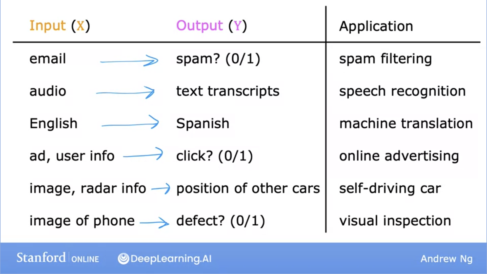
- Let’s dive deeper into a specific example: Housing price prediction.
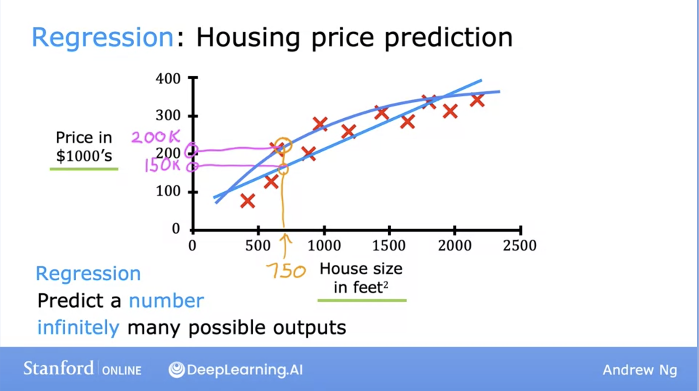
- Here, the \(x\) (input) value is the House size in feet squared and the \(y\) (output) is the Price in $1000’s.
- So how can the learning algorithm help us predict house values?
- One thing it can do is fit a straight, or in this case, a curved line that fits the data distribution well.
- Furthermore, this housing price prediction problem is a specific type of supervised learning known as regression.
- Regression: Predict a number from infinitely possible outputs.
Linear Regression
- Fits a straight line through the dataset like the example below:
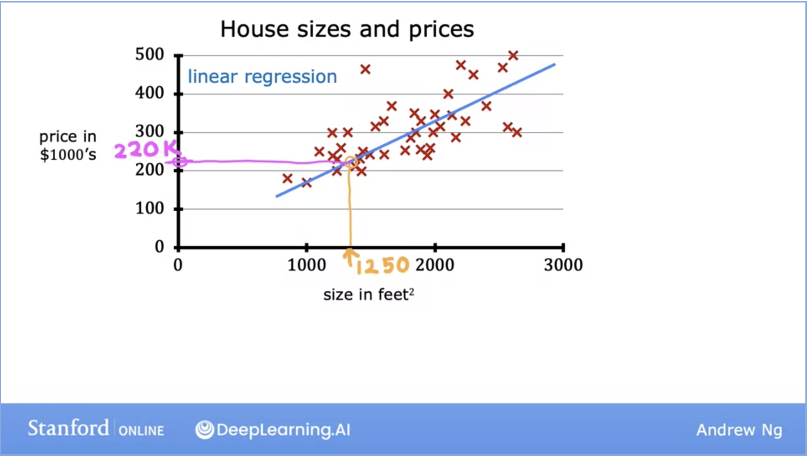
- This is a regression model because it predicts numbers, specifically house prices per size.

- Above we can see the breakdown of the life cycle of how a model works.
- We start with a training set (with features and targets) that is fed into the learning algorithm.
- The learning algorithm then produces some function \(f\), which is also called hypothesis in the Stanford ML lectures. This function, which is also the actual model, is fed the features and returns the prediction for the output \(y\).
- What if our training set had multiple features as input parameters?
- Here we take the features \(w\) as a row vector.
- \(b\) is a single number.
- Multiple linear regression is the model for multiple input features. The formula is displayed below:
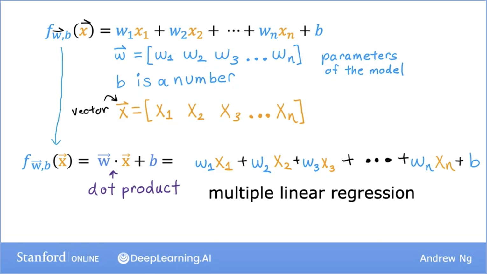
Cost Function for Linear Regression (Squared error)
- In order to implement linear regression, we need to first define the cost function.
- The cost function tells us how well the model is doing, so we can improve it further.
- Just a bit of context and recap before we dive into what the cost function is:
- Model: is the \(f\) function created by our learning algorithm represented as \(f(x) = wx + b\) for linear regression.
- \(w,b\) here are called parameters, or coefficients, or weights. These terms are used interchangeably.
- Depending on what the values of \(w,b\) are, our function changes.
- Now lets jump back to the cost function! The cost function is essentially trying to find \(w,b\) such that the predicted value of y (also known as \hat{y}) is as close to the actual value for y for all the values of \((x,y)\).
- What does the cost function do, mathematically speaking? Lets look at the image below:
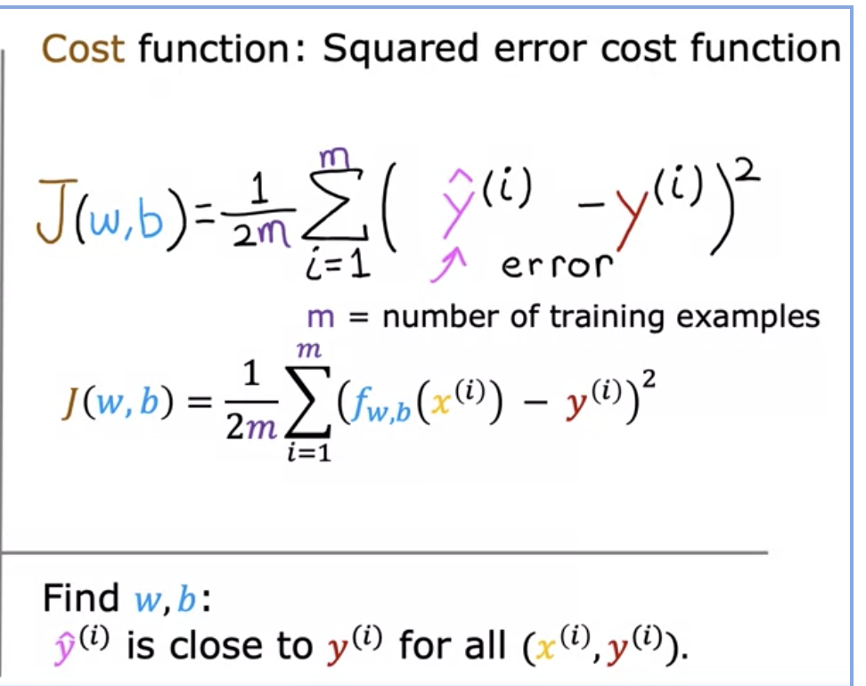
- Lets break down what each of these terms mean here in the formula above.
- It takes the prediction \(\hat{y}\) and compares it to the target \(y\) by taking \(\hat{y} - y\).
- This difference is called error, aka how far off our prediction is from the target.
- Next, we will compute the square of this error. We will do this because we will want to compute this value from different training examples in the training set.
- Finally, we want to measure the error across the entire training set. Thus, we will sum up the squared error.
- To build a cost function that doesn’t automatically get bigger as the training set size gets larger by convention, we will compute the average squared error instead of the total squared error, and we do that by dividing by \(m\) like this.
- The last part remaining here is that by convention, the cost function that is used in ML divides by 2 times \(m\). This extra division by 2 is to make sure our later calculations look neater, but the cost function is still effective if this step is disregarded.
- \(J(w,b)\) is the cost function and is also called the squared error cost function since we are taking the squared error of these terms.
- The squared error cost function is by far the most commonly used cost function for linear regression, and for all regression problems at large.
- Let’s talk about what the cost function does and how it is used.
- The cost function measures how well a line fits the training data.
- Goal: Find the parameters \(w\) or \(w,b\) that result in the smallest possible value for the cost function \(J\). Keep in mind the cost function \(J\) will not be in a 1D space, so minimizing this is not an easy task.
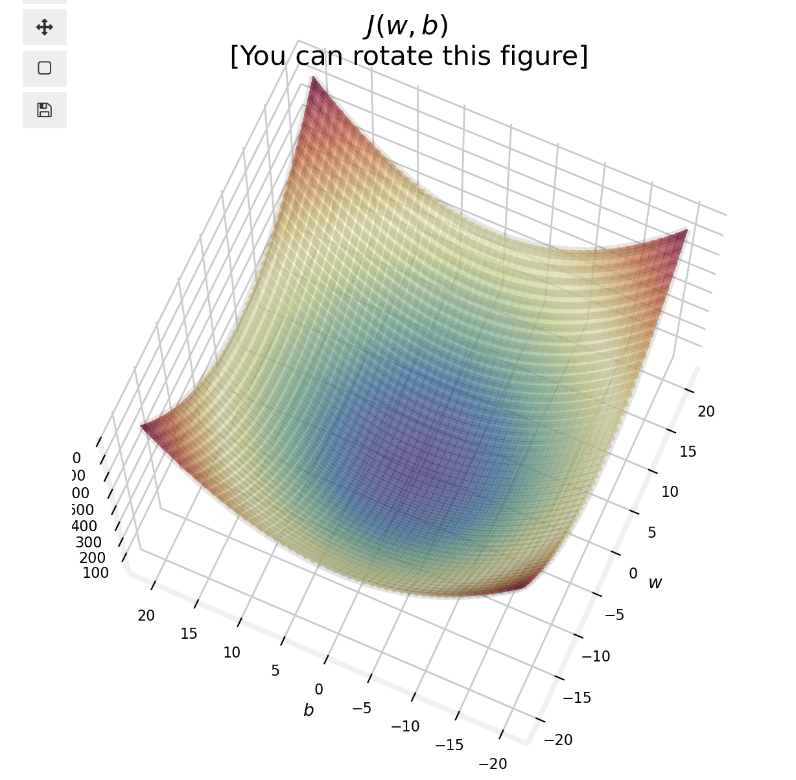
- We will use batch gradient descent here; gradient descent and its variations are used to train, not just linear regression, but other more common models in AI.
Gradient Descent or Stochastic Gradient Descent
- Gradient descent can be used to minimize any function, but here we will use it to minimize our cost function for linear regression.
- Let’s outline on a high level, how this algorithm works:
- Start with some parameters \(w,b\).
- Computes gradient using a single Training example.
- Keep changing the values for \(w,b\) to reduce the cost function \(J(w,b)\).
- Continue until we settle at or near a minimum. Note, some functions may have more than 1 minimum.
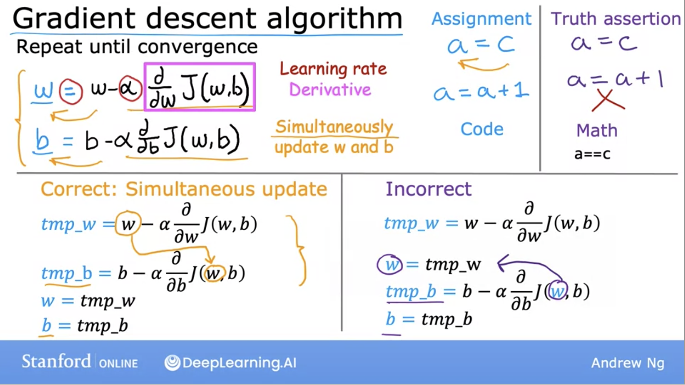
- Above is the gradient descent algorithm. Note the learning rate alpha, it determines how big of a step you take when updating \(w\) or \(b\).
- If the learning rate is too small, you end up taking too many steps to hit the local minimum which is inefficient. Gradient descent will work but it will be too slow.
- If the learning rate is too large, you may take a step that is too big as miss the minimum. Gradient descent will fail to converge.
- How should we choose the learning rate then? A few good values to start off with are \(0.001, 0.01, 0.1, 1\) and so on.
- For each value, you might just run gradient descent for a handful of iterations and plot the cost function \(J\) as a function of the number of iterations.
- After picking a few values of the learning rate, you may pick the value that seems to decrease the learning rate rapidly.
- How do we know we are close to the local minimum? Via a game of hot and cold because as we get near a local minimum, the derivative becomes smaller. Update steps towards the local minimum become smaller, thus, we can reach the minimum without decreasing the learning rate.
- How can we check gradient descent is working correctly?
- We can have 2 ways to achieve this. We can plot the cost function \(J\), which is calculated on the training set, and plot the value of \(J\) at each iteration (aka each simultaneous update of parameters \(w,b\)) of gradient descent.
- We can also use an Automatic convergence test. We choose an \(\epsilon\) to be a very small number. If the cost \(J\) decreases by less than \(\epsilon\) on one iteration, then you’re likely on this flattened part of the curve, and you can declare convergence.
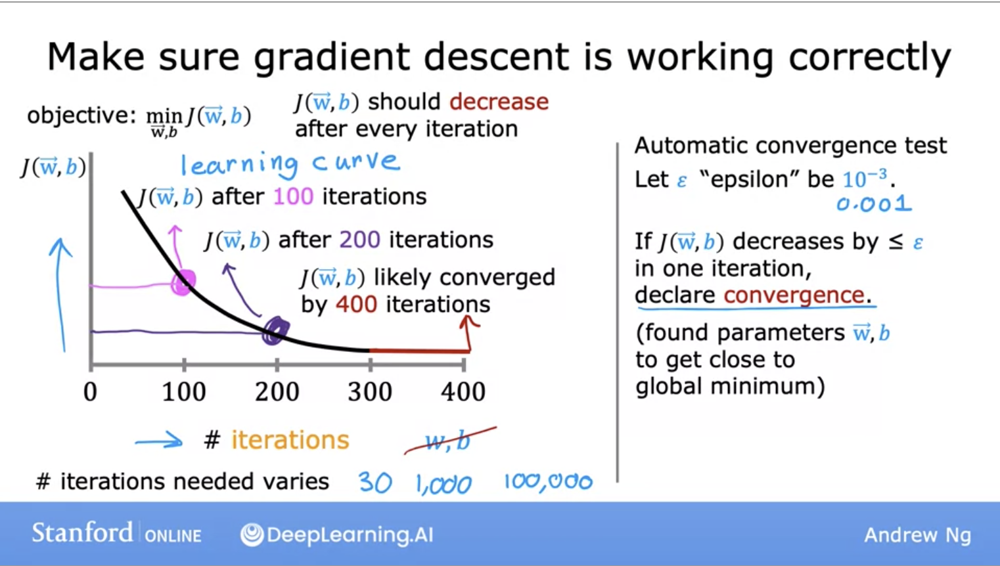
Gradient Descent with Momentum
- Optimization algorithms play a pivotal role in training machine learning models. Among various optimization techniques, gradient descent has gained immense popularity for its simplicity and effectiveness. However, vanilla gradient descent has its drawbacks, such as slow convergence and vulnerability to oscillations and local minima. To overcome these issues, an enhanced version of gradient descent called “Gradient Descent with Momentum” was introduced.
The Basics of Gradient Descent
- Before we delve into momentum, let’s first understand the basic concept of gradient descent. Gradient descent is an optimization algorithm used to minimize some function by iteratively moving in the direction of steepest descent, defined by the negative of the function’s gradient. In the context of machine learning, the function we’re typically interested in minimizing is the cost or loss function.
- In gradient descent, the update equation is given by:
theta = theta - learning_rate * gradient_of_cost_function
- where:
thetarepresents the parameters of our modellearning_rateis a hyperparameter that determines the step size during each iteration while moving toward a minimum of a loss functiongradient_of_cost_functionis the gradient of our loss function
The Problem with Vanilla Gradient Descent
- In high-dimensional input spaces, cost functions can have many elongated valleys, leading to a zigzagging pattern of optimization if using vanilla gradient descent. This is because the direction of the steepest descent usually doesn’t point towards the minimum but instead perpendicular to the direction of the valley. As a result, gradient descent can be very slow to traverse the bottom of these valleys.
Gradient Descent with Momentum
- Gradient Descent with Momentum is a technique that helps accelerate gradients vectors in the right directions, thus leading to faster converging. It is one of the most popular optimization algorithms and an effective variant of the standard gradient descent algorithm.
- The idea of momentum is derived from physics. A ball rolling down a hill gains momentum as it goes, becoming faster and faster on the way (unless friction or air resistance is considered). In the context of optimization algorithms, the ‘ball’ is the set of parameters we’re trying to optimize.
- To incorporate momentum, we introduce a variable
v(velocity), which serves as a moving average of the gradients. In the case of deep learning, this is often referred to as the “momentum term”. The update equations are:
v = beta * v - learning_rate * gradient_of_cost_function
theta = theta + v
- where:
betais a new hyperparameter introduced which determines the level of momentum (usually set to values like 0.9)vis the moving average of our gradients
Advantages of Gradient Descent with Momentum
- Faster Convergence: By adding a momentum term, our optimizer takes into account the past gradients to smooth out the update. We get a faster convergence and reduced oscillation.
- Avoiding Local Minima: The momentum term increases the size of the steps taken towards the minimum and helps escape shallow (i.e., non-optimal) local minima.
- Reducing Oscillations: It dampens oscillations and speeds up the process along the relevant direction, leading to quicker convergence.
- Gradient Descent with Momentum is a simple yet powerful optimization technique that has been proven to be effective for training deep learning models. It combines the strengths of gradient descent while overcoming its weaknesses by incorporating a momentum term, ensuring smoother and faster convergence.
Adam vs Momentum vs SGD
Gradient Descent is a fundamental optimization algorithm used to minimize (or maximize) functions. Stochastic Gradient Descent (SGD) and its variants like Momentum and Adam are all optimization algorithms commonly used in training machine learning models, especially deep neural networks. Let’s break down each one:
- Stochastic Gradient Descent (SGD):
- Basic Idea: Instead of calculating the gradient based on the entire dataset (as in batch gradient descent), SGD estimates the gradient based on a single example or a mini-batch at each iteration.
- Advantages: Faster convergence since it doesn’t have to process the whole dataset at every step. Additionally, the noise in the gradient estimation can help escape shallow local minima.
- Disadvantages: The updates can be very noisy, leading to oscillations in the convergence path. This noise can be mitigated using learning rate schedules or mini-batches, but raw SGD can still be less stable than some of its variants.
- Gradient Descent with Momentum:
- Basic Idea: This method introduces a velocity component that accumulates the gradient of the past steps to determine the next step. It’s akin to a ball rolling downhill, gaining momentum (and speed) according to the steepness of the slope.
- Advantages: The momentum term smoothens the optimization trajectory and can help overcome shallow local minima or small plateaus in the loss landscape. The accumulated past gradients give it a sort of “memory” of where it’s been.
- Disadvantages: Introduces an additional hyperparameter (momentum factor, usually denoted as ( \gamma )).
- Adam (Adaptive Moment Estimation):
- Basic Idea: Adam can be thought of as a combination of SGD with momentum and RMSProp (another optimization algorithm). It maintains moving averages of both the gradients (momentum) and the squared gradients.
- Advantages: Adam adjusts the learning rate of each parameter adaptively, based on the first and second moments of the gradients. This often results in faster convergence and is less sensitive to the initial learning rate.
- Disadvantages: Introduces more hyperparameters than basic SGD, although in practice the default values often work well (e.g., ( \beta_1 = 0.9, \beta_2 = 0.999 )). There have been some discussions in the research community about potential issues with Adam, like poor generalization performance or convergence problems in certain scenarios, but it remains a popular choice for many tasks.
Summary:
-
SGD provides a baseline optimization method, is simple, and can be effective with a well-tuned learning rate and mini-batches.
-
Momentum accelerates convergence by taking into account past gradients, especially in scenarios with noisy or sparse gradients.
-
Adam is an adaptive method that often requires less tuning of the learning rate and can converge faster in many scenarios, but it comes with more hyperparameters.
Use cases
- When choosing an optimizer, it’s often a good idea to try multiple options and see which one works best for your specific problem and data.
Stochastic Gradient Descent (SGD)
-
SGD estimates the gradient based on a small subset of data, like one example or mini-batch. It is simple, easy to implement, and computationally efficient.
- Use cases:
- When you have large datasets that don’t fit into memory. SGD allows online updating.
- For models with high capacity that can overfit batch methods. The noise in SGD acts as regularization.
- As a baseline optimization method. Tuning the learning rate schedule is important.
Momentum
-
Momentum accelerates SGD by accumulating gradients from previous steps to determine the direction of the update. It helps overcome plateaus and local minima.
- Use cases:
- When vanilla SGD is too noisy or unstable. The momentum term smooths the path.
- In cases where the loss surface has many ravines, curvature, and local optima. The momentum can help escape.
- When training deep neural networks, momentum is almost always helpful.
Adam
-
Adam adaptively estimates first and second moments of the gradients (akin to momentum and RMSProp). It adjusts the learning rate for each parameter.
- Use cases:
- When you want a method that is adaptive and requires little tuning of hyperparameters. Adam generally works well with defaults.
- For training deep neural networks, Adam often outperforms vanilla SGD and even Momentum, hence its popularity.
- In some cases, alternate methods like LAMB and RAdam have been proposed to improve on Adam.
So in summary, SGD is simple and a good baseline, Momentum helps accelerate SGD, and Adam is an adaptive method that is easy to use. But no single optimizer is best for every scenario - always test to see what works for your problem. The choice depends on factors like model architecture, data, and constraints.
AdaBoost
- Adaptive Boosting (AdaBoost) and Adaptive Moment Estimation (Adam) are two different types of algorithms that are used in the field of machine learning, but they serve very different purposes. AdaBoost is a boosting type ensemble machine learning algorithm primarily used in the context of supervised learning classification problems, while Adam is a type of optimization algorithm often employed during the training process of a neural network.
- Adaptive Boosting, or AdaBoost, is an ensemble learning method used for classification and regression problems. Its general strategy involves fitting a sequence of weak learners (i.e., models that are only slightly better than random guessing, such as small decision trees) on repeatedly modified versions of the data, and then combining them into a single strong learner.
- In the standard version of AdaBoost, each subsequent weak learner focuses more on the instances in the training set that the previous models misclassified, by increasing the relative weight of misclassified instances. Each model’s predictions are then combined through a weighted majority vote (or sum) to produce the final prediction.
- AdaBoost has shown good empirical performance and has been used in various applications.
Adam Algorithm (Adaptive Moment estimation)
- Adam algorithm can see if our learning rate is too small and we are just taking tiny little steps in a similar direction over and over again. It will make the learning rate larger in this case.
- On the other hand, if our learning rate is too big, where we are oscillating back and forth with each step we take, the Adam algorithm can automatically shrink the learning rate.
- Adam algorithm can adjust the learning rate automatically. It uses different, unique learning rates for all of your parameters instead of a single global learning rate.
- Below is the code for the Adam algorithm: 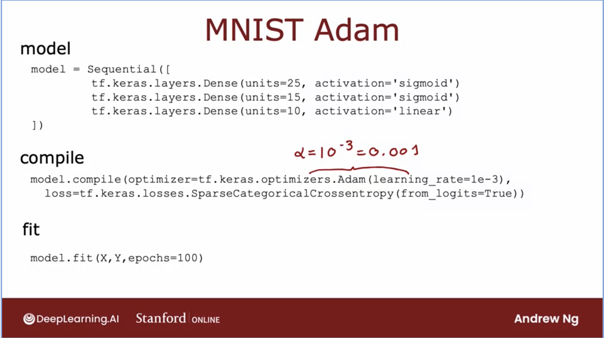
- Adam (Adaptive Moment Estimation) is an optimization algorithm that’s used for updating the weights in a neural network based on the training data. It’s popular in the field of deep learning because it is computationally efficient and has very little memory requirements.
- Adam is an extension of the stochastic gradient descent (SGD), which is a simple and efficient optimization method for machine learning algorithms. However, SGD maintains a single learning rate for all weight updates and the learning rate does not change during training. Adam, on the other hand, computes adaptive learning rates for different parameters.
- Adam works well in practice and compares favorably to other adaptive learning-method algorithms as it converges rapidly and the memory requirements are relatively low.
Key Differences
- Purpose: AdaBoost is an ensemble method used to improve the model performance by combining multiple weak models to create a robust strong model. Adam, on the other hand, is an optimization method that is used to find the best parameters of a model (like neural networks) during the training process.
- Use Cases: AdaBoost is mainly used in the context of classification and regression problems. Adam is predominantly used in the field of deep learning for training neural networks.
- Functioning: AdaBoost works by fitting a sequence of weak models on different distributions of the data. Adam works by adjusting the learning rate for each of the model’s parameters during the training process.
- Application: AdaBoost can be used with various types of base models (decision trees, logistic regression, etc.), as long as they are better than random guessing. Adam is specifically used for the purpose of optimizing the performance of neural networks.
- It’s important to note that while AdaBoost and Adam are fundamentally different algorithms serving different purposes, they can both play crucial roles within a deep learning classification problem. For example, AdaBoost could be used as a higher-level ensemble method to combine the predictions from multiple deep learning models that have been trained using the Adam optimization algorithm.
Feature Scaling
- Lets look at some techniques that make gradient descent work much better, we will start with a technique called feature scaling.
- This will enable gradient decent to run much faster.
- What feature scaling does is that it makes the features involved in the gradient descent computation are all on the similar scale.
- This ensures that the gradient descent moves smoothly towards the minima and that the steps for gradient descent are updated at the same rate for all the features.
- Having features on a similar scale helps gradient descent converge more quickly towards the minima.
Batch Gradient Descent
- Every step of gradient descent, we look at all the training examples instead of a subset of them.
- Batch gradient descent is an expensive operation since it involves calculations over the full training set at each step. However, if the function is convex or relatively smooth, this is the best option.
- Batch G.D. also scales very well with a large number of features.
- Computes gradient using the entire Training sample.
- Gives optimal solution if its given sufficient time to converge and it will not escape the shallow local minima easily, whereas S.G.D. can.
Batch SGD vs Minibatch SGD vs SGD
- The image below (source) shows the illustrated depiction of SGD and how it tries to find the local optima.
- Stochastic Gradient Descent (SGD):
- In traditional SGD, the model parameters are updated after processing each individual training example.
- It randomly selects one training example at a time and computes the gradient of the loss function with respect to the parameters based on that single example.
- The model parameters are then updated using this gradient estimate, and the process is repeated for the next randomly selected example.
- SGD has the advantage of being computationally efficient, as it only requires processing one example at a time.
- However, the updates can be noisy and may result in slower convergence since the gradient estimate is based on a single example.
- Batch Stochastic Gradient Descent (Batch SGD):
- Batch SGD is a variation of SGD where instead of processing one example at a time, it processes a small batch of training examples simultaneously.
- The model computes the gradient of the loss function based on this batch of examples and updates the parameters accordingly.
- The batch size is typically chosen to be larger than one but smaller than the total number of training examples.
- Batch SGD provides a balance between the computational efficiency of SGD and the stability of traditional Batch Gradient Descent.
- It reduces the noise in the gradient estimates compared to SGD and can result in faster convergence.
- Batch SGD is commonly used in practice as it combines the benefits of efficient parallelization and more stable updates.
- Minibatch SGD:
- In minibatch SGD, instead of processing one training example (SGD) or a full batch of examples (Batch SGD) at a time, a small subset of training examples, called a minibatch, is processed.
- The minibatch size is typically larger than one but smaller than the total number of training examples. It is chosen based on the computational resources and the desired trade-off between computational efficiency and stability of updates.
- The model computes the gradient of the loss function based on the minibatch examples and updates the parameters accordingly.
- This process is repeated iteratively, with different minibatches sampled from the training data, until all examples have been processed (one pass over the entire dataset is called an epoch).
- Minibatch SGD provides a balance between the noisy updates of SGD and the stability of Batch SGD.
- It reduces the noise in the gradient estimates compared to SGD and allows for better utilization of parallel computation resources compared to Batch SGD.
- Minibatch SGD is widely used in practice as it offers a good compromise between computational efficiency and convergence stability.
Explain briefly batch gradient descent, stochastic gradient descent, and mini-batch gradient descent? List the pros and cons of each.
- Gradient descent is a generic optimization algorithm capable for finding optimal solutions to a wide range of problems. The general idea of gradient descent is to tweak parameters iteratively in order to minimize a cost function.
- Batch Gradient Descent:
- In Batch Gradient descent the whole training data is used to minimize the loss function by taking a step towards the nearest minimum by calculating the gradient (the direction of descent).
- Pros:
- Since the whole data set is used to calculate the gradient it will be stable and reach the minimum of the cost function without bouncing around the loss function landscape (if the learning rate is chosen correctly).
- Cons:
- Since batch gradient descent uses all the training set to compute the gradient at every step, it will be very slow especially if the size of the training data is large.
- Stochastic Gradient Descent:
- Stochastic Gradient Descent picks up a random instance in the training data set at every step and computes the gradient-based only on that single instance.
- Pros:
- It makes the training much faster as it only works on one instance at a time.
- It become easier to train using large datasets.
- Cons:
- Due to the stochastic (random) nature of this algorithm, this algorithm is much less stable than the batch gradient descent. Instead of gently decreasing until it reaches the minimum, the cost function will bounce up and down, decreasing only on average. Over time it will end up very close to the minimum, but once it gets there it will continue to bounce around, not settling down there. So once the algorithm stops, the final parameters would likely be good but not optimal. For this reason, it is important to use a training schedule to overcome this randomness.
- Mini-batch Gradient:
- At each step instead of computing the gradients on the whole data set as in the Batch Gradient Descent or using one random instance as in the Stochastic Gradient Descent, this algorithm computes the gradients on small random sets of instances called mini-batches.
- Pros:
- The algorithm’s progress space is less erratic than with Stochastic Gradient Descent, especially with large mini-batches.
- You can get a performance boost from hardware optimization of matrix operations, especially when using GPUs.
- Cons:
- It might be difficult to escape from local minima.
- Batch Gradient Descent:
Polynomial Regression
- We’ve seen the idea of fitting a straight line to our data with linear regression, now lets take a look at polynomial regression which will allow you to fit curves and non linear functions to your data.
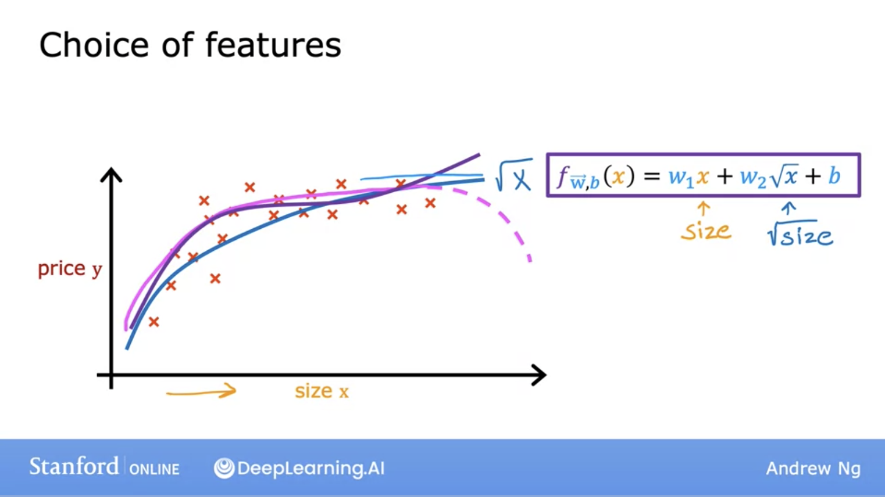
All 3 in one! (Cost function for Linear regression via Gradient descent)
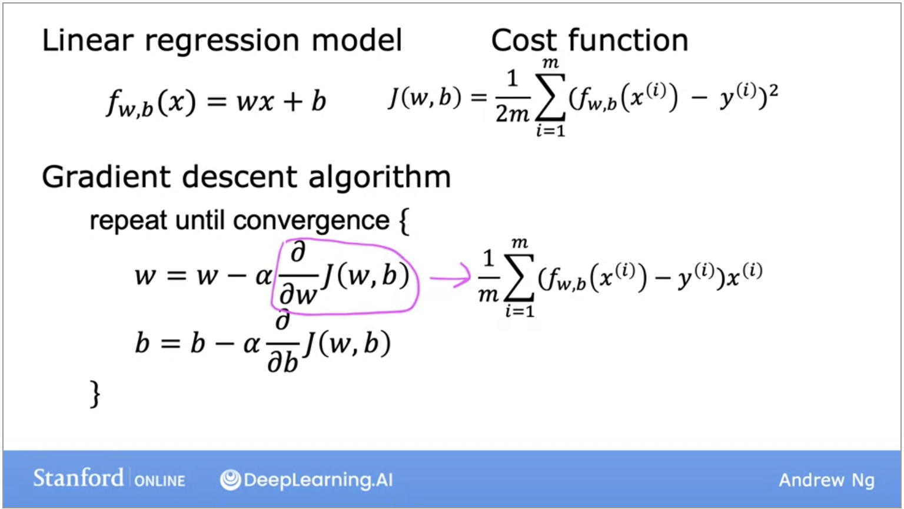
- Quick recap of the formulas we’ve seen thus far in the image above.
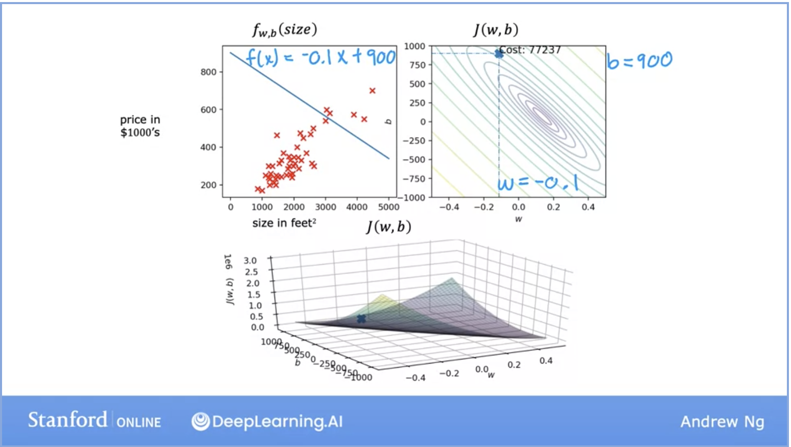 - In the above image, on the left, we see the model representation with all of its data set. On the right and the bottom we see convex and surface representations of the cost function.
Supervised Learning: Classification
- Another type of supervised learning algorithm is called the classification algorithm. Classification model predicts categories where there are only a small number of possible outputs.
- How is this different from regression we saw earlier? Let’s take a look with an example: 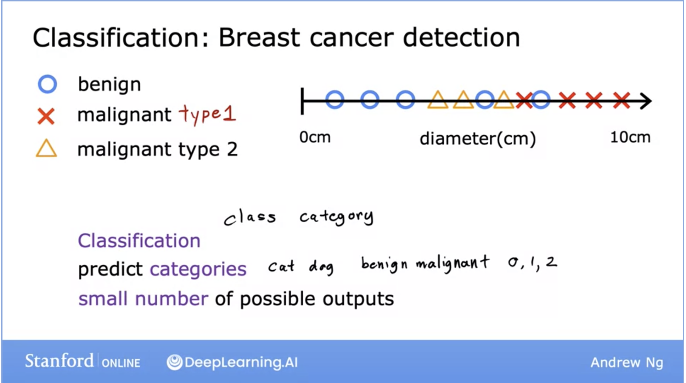
- Above, we can see the breast cancer detection problem. Early detection can help lead to a cure in many cases and thus, this is a problem that’s currently being worked on.
- Why is this a classification problem? Because the output here is a definitive prediction of a class (aka category), either the cancer is malignant or it is benign.
- This is a binary classification, however, your model can return more categories like the image above. It can return different/specific types of malignant tumors.
- Classification predicts a small number of possible outputs or categories, but not all possible categories in between like regression does. 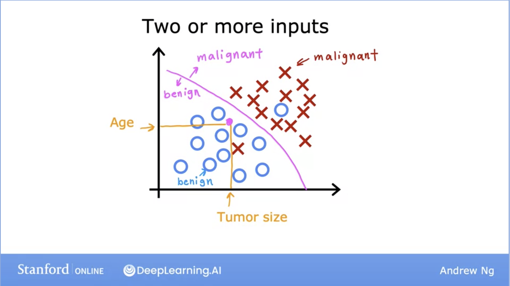
- So far we’ve only seen datasets with one input, in reality, you can have two or more inputs given to the model as displayed above.
- In this scenario, our learning algorithm might try to find some boundary between the malignant tumor vs the benign one in order to make an accurate prediction.
- The learning algorithm has to decide how to fit the boundary line.
- Linear regression algorithm does not work well for classification problems. We can look at the image below, in the case of an outlier x, linear regression will have a worse fit to the data set and move its decision boundary to the right. The blue vertical decision boundary is supposed to be the decision between malignant and non-malignant.
- However, once we add the outlier data, the decision boundary changes and thus, the classification between malignant and non-malignant changes, thus giving us a much worse learned function. 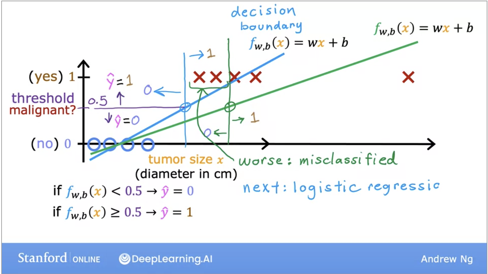
Logistic Regression
- The solution to our classification problem! Don’t get confused by its name, regression here is a misnomer, it’s used for classification problems because it returns a value between 0 or 1.
- To build out the logistic regression algorithm, we use the Sigmoid function because it is able to return us an output between 0 and 1.
- Lets look at its representation in the image below: 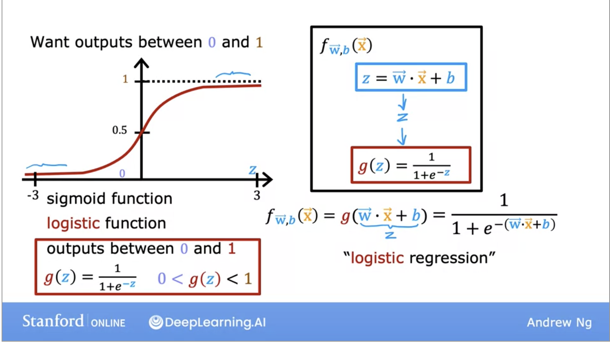
- We can think of the output as a “probability” which tells us which class the output maps to.
- So if our output is between 0 and 1, how do we know which class (malignant or not-malignant) the output maps to?
- The common answer is to pick a threshold of 0.5, which will serve as our decision boundary.
- We can also have non-linear decision boundaries like seen in the image below: 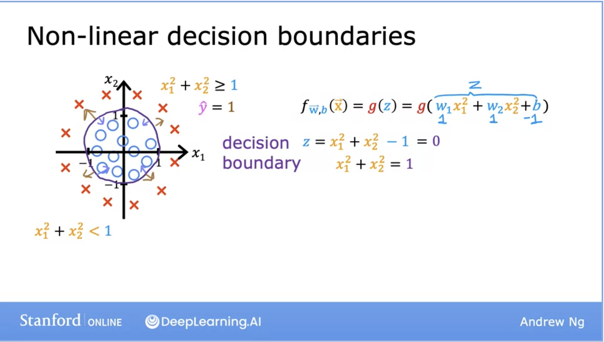
Gradient Descent for Logistic Regression
- Remember this is the algorithm to minimize the cost function.
- One thing to note here is that even though the formula for gradient descent might look the same as it did when we were looking at linear regression, the function \(f\) has changed:

Cost Function for Logistic Regression (Log Loss)
- One thing to keep in mind is Loss and Cost function mean the same thing and are used interchangeably.
- Below lets look at the function for the Logistic loss function. Remember that the loss function gives you a way to measure how well a specific set of parameters fits the training data. Thereby gives you a way to try to choose better parameters. 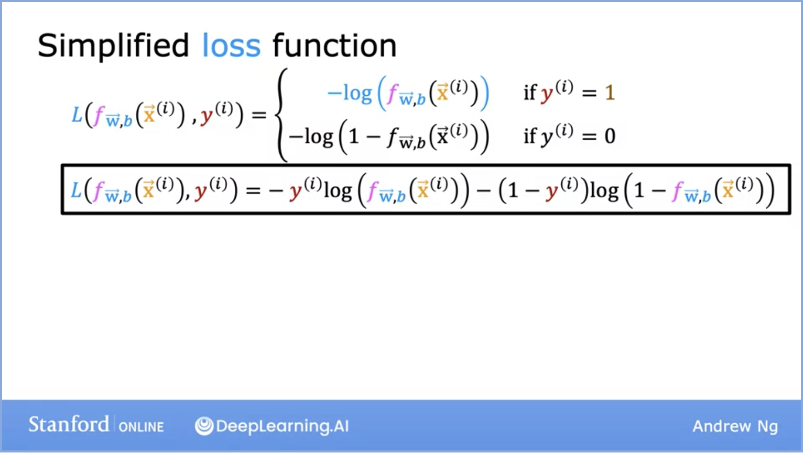
- Note y is either 0 or 1 because we are looking at a binary classification in the image below. This is a simplified loss function.

- Even though the formula’s are different, the baseline of gradient descent are the same. We will be monitoring gradient descent with the learning curve and implementing with vectorization.
Overfitting and Underfitting
- Overfitting and underfitting are common problems in machine learning that occur when a model’s performance on a dataset is not ideal. Here’s an explanation of both issues and strategies to mitigate them:
1. Overfitting:
- Overfitting occurs when a machine learning model learns to perform exceptionally well on the training data but performs poorly on unseen or validation/test data. It happens because the model has learned not only the underlying patterns in the data but also noise and random fluctuations. Key characteristics of overfitting include:
- Low training error but high validation/test error.
- The model is overly complex, capturing noise in the data.
- The model may have too many parameters relative to the amount of training data.
Mitigating Overfitting:
-
Several techniques can help mitigate overfitting:
-
Cross-Validation: Use techniques like k-fold cross-validation to evaluate model performance on multiple subsets of the data. This provides a better estimate of how well the model generalizes.
-
Regularization: Apply regularization techniques like L1 (Lasso) or L2 (Ridge) regularization to penalize large parameter values. This encourages the model to have simpler weight values and reduces overfitting.
-
Feature Selection: Carefully select and engineer features, discarding irrelevant or noisy features that may contribute to overfitting.
-
Data Augmentation: Increase the effective size of your training dataset by applying data augmentation techniques, such as rotation, translation, or adding noise to the input data.
-
Reduce Model Complexity: Use simpler models with fewer layers or parameters. Decreasing model complexity can reduce overfitting.
-
Early Stopping: Monitor the model’s performance on a validation set during training and stop training when the validation error starts to increase, indicating that the model is overfitting.
-
2. Underfitting:
- Underfitting occurs when a model is too simple to capture the underlying patterns in the data, resulting in poor performance both on the training data and on unseen data. Key characteristics of underfitting include:
- High training error and high validation/test error.
- The model is too simple and lacks the capacity to capture the data’s complexity.
Mitigating Underfitting:
-
To mitigate underfitting, you can:
-
Increase Model Complexity: Use more complex models with additional layers, neurons, or features to better capture the data’s underlying patterns.
-
Feature Engineering: Introduce new features or transformations that make the problem more amenable to modeling.
-
Collect More Data: Gather more data to provide the model with a better understanding of the underlying patterns in the data.
-
Hyperparameter Tuning: Experiment with different hyperparameters (e.g., learning rate, batch size) and architectures to find a better model configuration.
-
Ensemble Methods: Combine multiple models (e.g., bagging, boosting) to create a stronger ensemble that can collectively capture more complex patterns.
-
TL;DR
- Lets quickly go over the key takeaways from this section:
- Supervised learning maps \(x\) the input to the output \(y\) and learns from being given the “right answers”. This is also called training your model.
- The two major types of supervised learning algorithms are regression and classification.
- Regression: Predict a number from infinitely many possible outputs.
- Linear Regression is a type of regression where the model’s cost function is fit with a linear line.
- The model is represented by a function, with parameters (w,b), and the cost function’s goal is to minimize \(J(w,b)\) to find the best fitting line through the data set.
- Classification: Predict a category for a finite number of possible outputs.